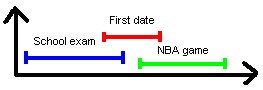
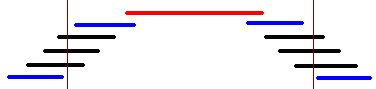
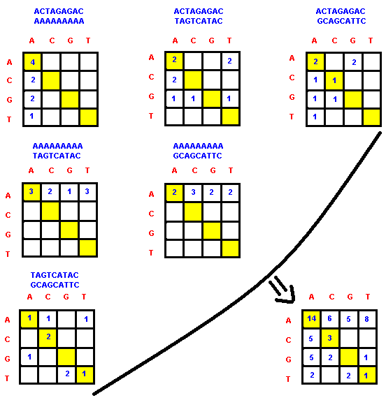

Member Search

|

By supernova
TopCoder Member
John Smith is in trouble! He is a TopCoder member and once he learned to
master the "Force" of dynamic programming, he began solving problem
after problem. But his once obedient computer acts quite unfriendly
today. Following his usual morning ritual, John woke up at 10 AM, had a
cup of coffee and went to solve a problem before breakfast. Something
didn't seem right from the beginning, but based on his vast newly
acquired experience, he wrote the algorithm in a flash. Tired of
allocating matrices morning after morning, the computer complained: "Segmentation fault!".
Despite his empty stomach, John has a brilliant idea and gets rid of
his beloved matrix by adding an extra "for cycle". But the computer
cries again: "Time limit exceeded!"
Instead of going nuts, John makes a radical decision. Enough
programming, he says! He decides to take a vacation as a reward for his
hard work.
Being a very energetic guy, John wants to have the time of his life!
With so many things to do, it is unfortunately impossible for him to
enjoy them all. So, as soon as he eats his breakfast, he devises a "Fun
Plan" in which he describes a schedule of his upcoming activities:
| ID | Scheduled Activity | Time Span |
| 1 | Debug the room | Monday, 10:00 PM - Tuesday, 1:00 AM |
| 2 | Enjoy a trip to Hawaii | Tuesday, 6:00 AM - Saturday, 10:00 PM |
| 3 | Win the Chess Championship | Tuesday, 11:00 AM - Tuesday, 9:00 PM |
| 4 | Attend the Rock Concert | Tuesday, 7:00 PM - Tuesday, 11:00 PM |
| 5 | Win the Starcraft Tournament | Wednesday, 3:00 PM - Thursday, 3:00 PM |
| 6 | Have some paintball fun | Thursday, 10:00 AM - Thursday, 4:00 PM |
| 7 | Participate in the TopCoder Single Round Match | Saturday, 12:00 PM - Saturday, 2:00 PM |
| 8 | Take a shower | Saturday, 8:30 PM - Saturday 8:45 PM |
| 9 | Organize a Slumber Party | Saturday, 9:00 PM - Sunday, 6:00 AM |
| 10 | Participate in an "All you can eat" and "All you can drink" challenge | Saturday, 9:01 PM - Saturday, 11:59 PM |
He now wishes to take advantage of as many as he can. Such careful planning requires some cleverness, but his mind has gone on vacation too. This is John Smith's problem and he needs our help.
Could we help him have a nice holiday? Maybe we can! But let's make an assumption first. As John is a meticulous programmer, once he agrees on something, he sticks to the plan. So, individual activities may either be chosen or not. For each of the two choices regarding the first activity, we can make another two choices regarding the second. After a short analysis, we find out that we have 2 ^ N possible choices, in our case 1024. Then, we can check each one individually to see whether it abides the time restrictions or not. From these, finding the choice with the most activities selected should be trivial. There are quite a lot of alternatives, so John would need to enlist the help of his tired computer. But what happens if we have 50 activities? Even with the most powerful computer in the world, handling this situation would literally take years. So, this approach is clearly not feasible.
Let's simply the problem and trust our basic instinct for a moment. A good approach may be to take the chance as the first opportunity arises. That is, if we have two activities we can follow and they clash, we choose the one that starts earlier in order to save some time. In this case John will start his first evening by debugging his room. Early the next morning, he has a plane to catch. It is less than a day, and he has already started the second activity. This is great! Actually, the best choice for now. But what happens next? Spending 5 days in Hawaii is time consuming and by Saturday evening, he will still have only two activities performed. Think of all the activities he could have done during this five day span! Although very fast and simple, this approach is unfortunately not accurate.
We still don't want to check for every possible solution, so let's try another trick. Committing to such a time intensive activity like the exotic trip to Hawaii can simply be avoided by selecting first the activity which takes the least amount of time and then continuing this process for the remaining activities that are compatible with those already selected. According to the previous schedule, first of all we choose the shower. With only 15 minutes consumed, this is by far the best local choice. What we would like to know is whether we can still keep this "local best" as the other compatible activities are being selected. John's schedule will look like this:
- Take a shower (15 minutes)
- Participate in the TopCoder Single Round Match (2 hours)
- Participate in an "All you can eat" and "All you can drink" challenge (2 hours 58 minutes)
- Debug the room (3 hours)
- Attend the Rock Concert (4 hours)
- Have some paintball fun (6 hours)

By going for the short date, he misses both the school exam and the match of his favorite team. Being the TopCoders that we are, we must get used to writing reliable programs. A single case which we cannot handle dooms this approach to failure.
What we generally have to do in situations like this is to analyze what might have caused the error in the first place and act accordingly to avoid it in the future. Let's look again at the previous scenario. The dating activity clashes with both the exam and the match, while the other two only clash with the date. So, the idea almost comes from itself. Why not always select the activity that produces the minimum amount of clashes with the remaining activities? Seems logical - it all makes sense now! We'll try to prove that this approach is indeed correct. Suppose we have already selected an activity X and try to check if we could have selected two activities A and B that clash with X instead. A and B should of course not clash, otherwise the final result will not improve. But now, we are back to the previous case (X has two clashes, while A and B have only one). If this is the case, A and B are selected from the beginning. The only way to disprove our assumption is to make A and B clash more, without affecting other activities except X. This is not very intuitive, but if we think it through we can (unfortunately) build such a case:

The activities represented by the blue lines are the optimal choice given the above schedule. But as the activity in red produces only 2 clashes, it will be chosen first. There are 4 compatible activities left before, but they all clash with each other, so we can only select one. The same happens for the activities scheduled after, leaving space for only one more choice. This only gives us 3 activities, while the optimum choice selects 4.
So far, every solution we came up with had a hidden flaw. It seems we have to deal with a devilish problem. Actually, this problem has quite an elegant and straightforward solution. If we study the figure above more carefully, we see that the blue activity on the bottom-left is the only one which finishes before the "timeline" indicated by the thin vertical bar. So, if we are to choose a single activity, choosing the one that ends first (at a time t1), will leave all the remaining time interval free for choosing other activities. If we choose any other activity instead, the remaining time interval will be shorter. This is obvious, because we will end up anyway with only one activity chosen, but at a time t2 > t1. In the first case we had available all the time span between t1 and finish and that included the time between t2 and finish. Consequently, there is no disadvantage in choosing the activity that finishes earlier. The advantage may result in the situation when we are able to insert another activity that starts between t1 and t2 and ends up before the end of any activity that starts after time t2.
Known as the "Activity Selection", this is a standard problem that can be solved by the Greedy Method. As a greedy man takes as much as he can as often as he can, in our case we are choosing at every step the activity that finishes first and do so every time there is no activity in progress. The truth is we all make greedy decisions at some point in our life. When we go shopping or when we drive a car, we make choices that seem best for the moment. Actually, there are two basic ingredients every greedy algorithm has in common:
- Greedy Choice Property: from a local optimum we can reach a global optimum, without having to reconsider the decisions already taken.
- Optimal Substructure Property: the optimal solution to a problem can be determined from the optimal solutions to its subproblems.
Let N denote the number of activities and
{I} the activity I ( 1 <= I <= N )
For each {I}, consider S[I] and F[I] its starting and finishing time
Sort the activities in the increasing order of their finishing time
- that is, for every I < J we must have F [I] <= F [J]
// A denotes the set of the activities that will be selected
A = {1}
// J denotes the last activity selected
J = 1
For I = 2 to N
// we can select activity 'I' only if the last activity
// selected has already been finished
If S [I] >= F [J]
// select activity 'I'
A = A + {I}
// Activity 'I' now becomes the last activity selected
J = I
Endif
Endfor
Return A
After applying the above algorithm, Johnny's "Fun Plan" would look like this:
- Eliminate all the bugs and take some time to rest
- Tuesday is for chess, prepare to beat them all
- A whole day of Starcraft follows, this should be fun
- The next two days are for recovery
- As for the final day, get a few rating points on TopCoder, take a shower and enjoy the versatile food and the good quality wine
BioScore
In this problem you are asked to maximize the average homology score for all the pairs in the set. As an optimal solution is required, this may be a valuable clue in determining the appropriate method we can use. Usually, this kind of problems can be solved by dynamic programming, but in many cases a Greedy strategy could also be employed.
The first thing we have to do here is to build the frequency matrix. This is an easy task as you just have to compare every pair of two sequences and count the occurrences of all the combinations of nucleic acids (AA, AC, AG, AT, CA, CC, CG, CT, GA, GC, GG, GT, TA, TC, TG, TT). Each of these combinations will be an element in the matrix and its value will represent the total number of occurrences. For example, let's take the set { "ACTAGAGAC", "AAAAAAAAA", "TAGTCATAC", "GCAGCATTC" } used in Example 2.

In the bottom-right part of the figure above, you can see the resulting frequency matrix. Let us denote it by F What we have to do from now is to find another matrix S such that the sum of the 16 corresponding products of the type F[I,J] * S[I,J] (1 <= I,J <= 4) is maximized.
Now, let's look at the matrix restrictions and analyze them one by one:
1) The sum of the 16 entries must be 0.
This is more like a commonsense condition. With all the elements in F positive, the final score tends to increase as we increase the elements in S. But because the sum must be kept at 0, in order to increase an element, we'll have to decrease others. The challenge of this problem resides in finding the optimal distribution.
2) All entries must be integers between -10 and 10 inclusive
Another commonsense condition! Our search space has been drastically reduced, but we are still left with a lot of alternatives.
3) It must be symmetric ( score(x,y) = score(y,x) )
Because of the symmetry, we must attribute the same homology score to combinations like "AC" and "CA". As a result, we can also count their occurrences together. For the previous example, we have the set of combinations with the following frequencies:
| AA: 14 | CC: 3 | GG: 0 | TT: 1 |
| AC + CA: 11 | AG + GA: 10 | AT + TA: 10 | |
| CG + GC: 2 | CT + TC: 0 | ||
| GT + TG: 3 |
An intuitive approach would be to assign a higher homology score to the combinations that appear more often. But as we must keep the score sum to 0, another problem arises. Combinations like AA, CC, GG and TT appear only once in the matrix. So, their homology score contribute less to the total sum.
4) Diagonal entries must be positive ( score(x,x)>0 )
This restriction differentiates the elements on the diagonal from the others even further. Basically, we have two groups: the four elements on the diagonal (which correspond to the combinations AA, CC, GG and TT) and the six elements not on the diagonal (which correspond to the combinations AC + CA, AG + GA, AT + TA, CG + GC, CT + TC and GT +TG). Each of these groups can have different states, depending on the value we assign to their elements.
To make things easier, for each possible state in the first group we wish to find an optimal state for the second group. As all the elements in the second group have the same property, we will try to find their optimal state by using a Greedy approach. But because the elements in the first group can take any values between 1 and 10, the sum we wish to obtain for the scores we choose in the second group has to be recalculated. It's easy to notice that the sum of the elements in the first group can range anywhere between 4 and 40. As a result, depending on the choice we make for the first group, we'll have to obtain a sum between -2 and -20 for the second (we shall not forget that the symmetrical elements in the matrix have been coupled together, thus they count twice in the score matrix).
Now, we have finally reached to the problem core. The solution to the entire problem depends on finding the optimal choice for the scores in the second group. If the problem has indeed the greedy choice property and the optimal substructure property, we'll be able to pick one element form the group, assign it the best scenario and proceed with the remaining elements in the same manner.
Claim: If we always give the highest possible score to the combination that has the most occurrences in the group, we'll obtain in the end the highest possible score for the entire group.
The first thing we have to do is to sort these six elements in matrix F. Then, we have to actually compute the corresponding score values in S. As the total score we should obtain is at least -20, one quick insight tells us that the first two elements could be given a score of 10 (if we assign -10 to all the remaining four elements, -20 can still be achieved). We know as well that the final score is less than 0. Because we want to maximize the scores for the first elements, the last three elements can only be -10 (in the best case the score sum of the elements is -2 and then, we assign scores in the following manner: [10, 10, 8, -10, -10, -10]). Finally, the value of the third element will depend on the choices we make for the first group. From the maximum of 10, we subtract half of the score sum of the elements in the first group (we should note here that the aforementioned sum must be even).
Now, we have to make sure that our approach is indeed correct. The proof is quite straightforward, as in order keep the sum in S constant we can only decrease from the score of a combination with more occurrences and increase to the score of a combination with fewer occurrences. Let f1 and f2 be the frequencies of the two combinations and f1 >= f2. We have f1 * s1 + f2 * s2 = X, where X is the sum we should maximize. By our greedy assumption, s1 >= s2. As s1 + s2 remains constant, the previous sum changes to: f1*(s1 - a) + f2*( s2 + a) = Y, where a is strictly greater than 0. We find out that Y - X = a * (f2 - f1). Because f1 >= f2, this difference will always be less than or equal to 0. It results that Y <= X. As Y was chosen arbitrarily, it can be concluded that the initial greedy choice always gives the maximum possible score.
We apply the algorithm described above for each state of the elements in the first group and save the best result.
Representation: Instead of using the matrices F and S, we find it more convenient to use arrays for storing both the combination frequencies and their corresponding score. The first 4 elements of F will denote the frequency of the combinations AA, CC, GG and TT. The next 6 elements will denote the other possible combinations and are sorted in the decreasing order of their frequency (F[5] >= F[6] >= F[7] >= F[8] >= F[9] >= F[10]). S will be an array of 10 elements such that S[I] is the score we attribute to the combination I.
The main algorithm is illustrated in the following pseudo code:
Best = -Infinity
For S [1] = 1 to 10
For S [2] = 1 to 10
For S [3] = 1 to 10
For S [4] = 1 to 10
If (S [1] + S [2] + S [3] + S [4]) mod 2 = 0
S [5] = S[6] = 10
S [7] = 10 - (S [1] + S [2] + S [3] + S[4]) / 2
S [8] = S [9] = S [10] = -10
// in Best we save the greatest average homology score
Best = max (Best , score (F,S))
// obtained so far.
Endif
Endfor
Endfor
Endfor
Endfor
Return Best
Given the score matrix (in our case the array S), we
compute the final result by just making the sum of the products of the
form F[I] * S[I] ( 1 <= I <=10) and divide it by N * (N-1) / 2 in
order to obtain the average homology score.
GoldMine
We are now going to see how a gold mine can be exploited to its fullest, by being greedy. Whenever we notice the maximum profit is involved, a greedy switch should activate. In this case, we must allocate all the miners to the available mines, such that the total profit is maximized. After a short analysis, we realize that we want to know how much money can be earned from a mine in all the possible cases. And there are not so many cases, as in each mine we can only have between 0 and 6 workers. The table below represents the possible earnings for the two mines described in the example 0 of the problem statement:
| 0 workers | 1 worker | 2 workers | 3 workers | 4 workers | 5 workers | 6 workers | |
| First mine | 0 | 57 | 87 | 87 | 67 | 47 | 27 |
| Second mine | 0 | 52 | 66 | 75 | 75 | 66 | 48 |
As we are going to assign workers to different mines, we may be interested in the profit a certain worker can bring to the mine he was assigned. This can be easily determined, as we compute the difference between the earnings resulted from a mine with the worker and without. If we only had one worker, the optimal choice would have been to allocate him in the mine where he can bring the best profit. But as we have more workers, we want to check if assigning them in the same manner would bring the best global profit.
In our example we have 4 workers that must be assigned. The table below shows the profit obtained in the two mines for each additional worker.
| Initially | Worker 1 | Worker 2 | Worker 3 | Worker 4 | Worker 5 | Worker 6 | |
| First mine | - | 57 | 30 | 0 | -20 | -20 | -20 |
| Second mine | - | 52 | 14 | 9 | 0 | -9 | -20 |
We notice that the first mine increases its profit by 57 if we add a worker, while the second by only 52. So, we allocate the first worker to the first mine.
| Initially | Worker 1 | Worker 2 | Worker 3 | Worker 4 | Worker 5 | Worker 6 | |
| First mine | - | 57 | 30 | 0 | -20 | -20 | -20 |
| Second mine | - | 52 | 14 | 9 | 0 | -9 | -20 |
Now, an additional worker assigned to the first mine would only increase its profit by 30. We put him in the second, where the profit can be increased by 52.
| Initially | Worker 1 | Worker 2 | Worker 3 | Worker 4 | Worker 5 | Worker 6 | |
| First mine | - | 57 | 30 | 0 | -20 | -20 | -20 |
| Second mine | - | 52 | 14 | 9 | 0 | -9 | -20 |
The third miner would be more useful to the first mine as he can bring a profit of 30.
| Initially | Worker 1 | Worker 2 | Worker 3 | Worker 4 | Worker 5 | Worker 6 | |
| First mine | - | 57 | 30 | 0 | -20 | -20 | -20 |
| Second mine | - | 52 | 14 | 9 | 0 | -9 | -20 |
As for the last miner, we can either place him in the first mine (for a zero profit) or in the second (for a profit of 14). Obviously, we assign him to the second.
| Initially | Worker 1 | Worker 2 | Worker 3 | Worker 4 | Worker 5 | Worker 6 | |
| First mine | - | 57 | 30 | 0 | -20 | -20 | -20 |
| Second mine | - | 52 | 14 | 9 | 0 | -9 | -20 |
In the end two of the workers have been allocated to the first mine and another two to the second. The example shows us that this is indeed the choice with the best total profit. But will our "greedy" approach always work?
Claim: We obtain the maximum total profit when we assign the workers one by one to the mine where they can bring the best immediate profit.
Proof: Let A and B be two mines and a1, a2, b1, b2 be defined as below:
a1 - the profit obtained when an additional worker is assigned to mine A
a1 + a2 - the profit obtained when two additional workers are assigned to mine A
b1 - the profit obtained when an additional worker is assigned to mine B
b1 + b2 - the profit obtained when two additional workers are assigned to mine B
Let us now consider that we have two workers to assign and a1 >= b1.
Our greedy algorithm will increase the profit by a1 for the first worker and by max (a2, b1) for the second worker. The total profit in this case is a1+max(a2,b1). If we were to choose the profit b1 for the first worker instead, the alternatives for the second worker would be a profit of a1 or a profit of b2.
In the first case, the total profit would be b1+a1 <= a1 + max (a2,b1).
In the second case, the total profit would be b1+b2. We need to prove that b1+b2 <= a1+max(a2,b1). But b2 <= b1 as the profit of allocating an extra worker to a mine is always higher or equal with the profit of allocating the next extra worker to that mine.
| Gold Mine Status | Profit from extra-worker 1 | Profit from extra-worker 2 |
| number of ores > number of workers + 2 | 60 | 60 |
| number of ores = number of workers + 2 | 60 | 50 |
| number of ores = number of workers + 1 | 50 | -20 |
| number of ores < number of workers + 1 | -20 | -20 |
As b1+b2 <= a1+b2 <= a1+b1 <= a1+max(a2,b1), the greedy choice is indeed the best .
Coding this is not difficult, but one has to take into account the problem constraints (all miners must be placed, there are at most six workers in a mine and if a worker can be optimally assigned to more than one mine, put him in the mine with the lowest index).
WorldPeace
The greedy algorithms we have seen so far work well in every possible situation as their correction has been proven. But there is another class of optimization problems where Greedy Algorithms have found their applicability. This category mostly includes NP-complete problems (like the Traveling Salesman Problem) and here, one may prefer to write an heuristic based on a greedy algorithm than to wait ... The solution is not always the best, but for most real purposes, it is good enough. While this problem is not NP, it is an excellent example of how a simple greedy algorithm can be adapted to fool not only the examples, but also the carefully designed system tests. Such an algorithm is not very hard to come with and after a short analysis we notice that in order to maximize the total number of groups it is always optimal to form a group from the k countries that have the highest number of citizens. We apply this principle at every single step and then sort the sequence again to see which are the next k countries having the highest number of citizens. This idea is illustrated in the following pseudo code:
Groups = 0
Repeat
// sorts the array in decreasing order
Sort (A)
Min= A[K]
If Min > 0 Groups = Groups + 1
For I = 1 to K
A[I] = A[I] - 1
Endfor
Until Min = 0
Return Groups
Unfortunately, a country can have up to a billion citizens, so we cannot
afford to make only one group at a time. Theoretically, for a given set
of k countries, we can make groups until all the citizens in one of
these countries have been grouped. And this can be done in a single
step:
Groups = 0
Repeat
// sorts the array in decreasing order
Sort (A)
Min= A[K]
Groups = Groups + Min
For I = 1 to K
A[I] = A[I] - Min
Endfor
Until Min = 0
Return Groups
The execution time is no longer a problem, but it is the algorithm! As
we check it on the example 0, our method returns 4 instead of 5. The
result returned for the examples 1, 2 and 3 is correct. As for the last
example, instead of making 3983180234 groups, we are able to make
3983180207. Taking into account the small difference, we may say that
our solution is pretty good, so maybe we can refine it more on this direction.
So far, we have two algorithms:
- a first greedy algorithm that is accurate, but not fast enough
- a second greedy algorithm that is fast, but not very accurate.
Groups = 0
Repeat
// sorts the array in decreasing order
Sort (A)
Min= A[K]
Allowance = (Min+999) / 1000
Groups = Groups + Allowance
For I = 1 to K
A[I] = A[I] - Allowance
Endfor
Until Min = 0
Return Groups
If this approach is correct indeed, remains to be seen. Despite the
fact it escaped both Tomek's keen eyes and system tests, it is very
likely that the result is not optimal for all the set of possible test
cases. This was just an example to show that a carefully chosen
refinement on a simple (but obvious faulty) greedy approach can actually
be the "right" way. For more accurate solutions to this problem, see
the Match Editorial.
Conclusion
Greedy algorithms are usually easy to think of, easy to implement and run fast. Proving their correctness may require rigorous mathematical proofs and is sometimes insidious hard. In addition, greedy algorithms are infamous for being tricky. Missing even a very small detail can be fatal. But when you have nothing else at your disposal, they may be the only salvation. With backtracking or dynamic programming you are on a relatively safe ground. With greedy instead, it is more like walking on a mined field. Everything looks fine on the surface, but the hidden part may backfire on you when you least expect. While there are some standardized problems, most of the problems solvable by this method call for heuristics. There is no general template on how to apply the greedy method to a given problem, however the problem specification might give you a good insight. Advanced mathematical concepts such as matroids may give you a recipe for proving that a class of problems can be solved with greedy, but it ultimately comes down to the keen sense and experience of the programmer. In some cases there are a lot of greedy assumptions one can make, but only few of them are correct (see the Activity Selection Problem). In other cases, a hard problem may hide an ingenious greedy shortcut, like there was the case in the last problem discussed, WorldPeace. And this is actually the whole beauty of greedy algorithms! Needless to say, they can provide excellent challenge opportunities...
A few final notes
- a problem that seems extremely complicated on the surface (see TCSocks) might signal a greedy approach.
- problems with a very large input size (such that a n^2 algorithm is not fast enough) are also more likely to be solved by greedy than by backtracking or dynamic programming.
- despite the rigor behind them, you should look to the greedy approaches through the eyes of a detective, not with the glasses of a mathematician.
| A good detective |
Greedy and lucky |
Greedy and not so lucky |
- in addition, study some of the standard greedy algorithms to grasp the concept better (Fractional Knapsack Problem, Prim Algorithm, Kruskal Algorithm, Dijkstra Algorithm, Huffman Coding, Optimal Merging, Topological Sort).
Level 1
GroceryBagger - SRM 222
FanFailure - SRM 195
PlayGame - SRM 217
SchoolAssembly - TCO04 Round 2
RockStar - SRM 216
Apothecary - SRM 204
Boxing - TCO04 Round 3
Unblur - TCO04 Semifinal Room 3
Level 2
Crossroads - SRM 217
TCSocks - SRM 207
HeatDeath - TCO04 Round 4
BioScore - TCO04 Semifinal Room 1
Rationalization - SRM 224
Level 3
GoldMine - SRM 169
MLBRecord - TCO04 Round 2
RearrangeFurniture - SRM 220
WorldPeace - SRM 204